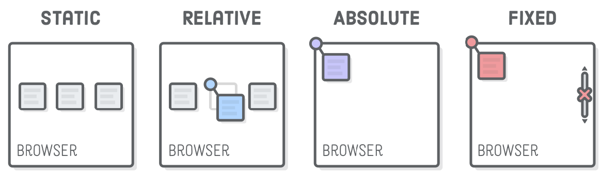

Tipos de Posicionamiento en CSS
Cuando vamos a diseñar páginas web tanto en HTML como en CSS, para poder maquetar nuestros elementos, debemos de tener en cuenta
una serie de propiedades que nos permitan colocar dichos elementos según nuestras características solicitadas.
Para ello, debemos utilizar por lo tanto, una propiedad en CSS que se llama position
Position consiste en una propiedad que nos va a permitir establecer la posisión de un elemento dentro de nuestra web.
Esto consiste exactamente en cómo vamos a posiciona un elemento en nuestro HTML con respecto a su elemento padre y respecto al
flujo normal del documento.
Entre las propiedades que podemos usar con position tenemos las siguientes:
- Static:Es un tipo de posicionamiento denominado también como normal o estático.Es decir, posicionamiento por defecto.
Como se ha dicho, es un posicionamiento por defecto, con el que los navegadores acomodan los elementos según el flujo del mismo.
- Relative:Es un tipo de posicionamiento denominado como Relativo. Nos permite posicionar una caja y después moverla desde
su lugar original (dejando su lugar vacío)
- Absolute:Es un tipo de posicionamiento denominado como absoluto. Este tipo de propiedad nos permite posicionar una caja
respecto a su contenedor y el resto de elementos ignoran la nueva posición
- Fixed:También conocida como fija. Nos permite posicionar una caja en donde su posición respecto a la plantalla del
usuario siempre va a ser la misma
- Stickly:Se considera un tipo de posicionamiento híbrido entre el posicionamiento relativo y fijo. Es decir, un elemento
con posicionmiento stickly es tratado como un elemento con posición relativa hasta que cruza un umbral específicado, pocomo puede
ser un límite de su "padre"
